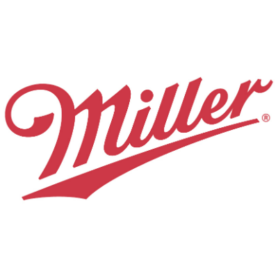

밀러 Miller Brewing Company
밀러(Miller Brewing Company)는 미국 위스콘신주 밀워키에 본사를 둔 맥주 양조회사이다. 1855년 Frederick Miller가 설립했으며 Miller Lite, Miller High Life 등의 맥주 브랜드를 만들어 왔다.
최종 업데이트

밀러는 어떤 브랜드인가
밀러는 미국 위스콘신주 밀워키에 기반을 둔 맥주 양조회사이다. 1855년 Frederick Miller가 설립했으며 가족 경영은 1966년까지 이어졌다.
Grace and Company, Philip Morris, South African Breweries를 거쳐 SABMiller 체제에 속하게 되었다. 2016년 Molson Coors가 인수했고, Molson Coors는 밀워키의 옛 밀러 양조장 부지에서 Miller Brewery를 계속 운영한다.
대표 브랜드로는 Miller Lite, Miller High Life, Milwaukee's Best가 있다. Miller Lite는 1972년에 출시되어 널리 인기를 얻은 최초의 라이트 맥주로 소개된다.
밀러는 어떻게 시작되고 성장했나
Frederick Miller는 1854년 독일 Hohenzollern에서 이민해 독특한 양조 효모를 가져왔고, 1855년 밀워키에서 회사를 세웠다. 그는 작은 Plank Road Brewery를 $2,300에 사들였으며, 이 양조장은 인근 농장에서 나는 원료를 쉽게 구할 수 있는 위치에 있었다.
1855년 사명을 Miller Brewing Company, Inc.로 바꾸었고 가족 소유는 1966년까지 이어졌다. 1961년에는 밀워키 5대 양조사 중 가장 작은 A.
Gettelman Brewing Company를 인수했다. 1966년에는 W.
Grace and Company가 회사를 인수했다.
밀러의 브랜드 아이덴티티는 무엇인가
밀러는 1855년 밀워키에서 시작해 최초로 널리 인기를 얻은 라이트 맥주 Miller Lite와 "The Champagne of Beers"의 Miller High Life를 낸 미국 양조회사이다.
밀러의 대표 제품과 서비스는 무엇인가
Miller High Life는 1903년에 출시된 미국식 라거로, 밀러의 가장 오래된 브랜드이며 도수는 4.6%이다. 풍부한 탄산 때문에 오랫동안 "The Champagne of Beers"라는 슬로건을 사용했다.
Miller Lite는 1972년에 출시된 미국식 라이트 라거로, 도수는 4.2%이다. Miller Genuine Draft(MGD)는 1985년에 출시되었으며 High Life와 같은 레시피로 만들되 살균 대신 저온 여과 방식을 쓴다.
Miller 64는 도수 2.8%의 "ultra light" 맥주이다.
밀러는 지금 어떤 상태인가
밀러 로고는 어떻게 변해왔나
자주 묻는 질문
밀러는 어느 나라 브랜드인가요?
밀러는 미국의 식음료 브랜드입니다.
밀러는 언제 설립되었나요?
밀러는 1855년 설립되었습니다.
밀러의 브랜드 아이덴티티는 무엇인가요?
밀러는 1855년 밀워키에서 시작해 최초로 널리 인기를 얻은 라이트 맥주 Miller Lite와 "The Champagne of Beers"의 Miller High Life를 낸 미국 양조회사이다.
밀러의 대표 제품은 무엇인가요?
Miller High Life는 1903년에 출시된 미국식 라거로, 밀러의 가장 오래된 브랜드이며 도수는 4.6%이다.
밀러는 어느 기업이 소유하고 있나요?
2015년 Anheuser-Busch InBev가 SABMiller 인수에 합의했고, 미국 법무부와의 합의에 따라 SABMiller는 MillerCoors 지분을 Molson Coors에 매각했다.
밀러의 창업자는 누구인가요?
밀러의 창업자는 Frederick Miller입니다(위키데이터 기준).
밀러의 본사는 어디에 있나요?
밀러의 본사는 밀워키에 있습니다(위키데이터 기준).
출처와 검증
밀러 관련 참고: 공식 웹사이트 · 위키데이터 Q658637 · 한국어 위키백과 · 영어 위키백과. 브랜드명은 한글과 원어를 함께 표기하되 데이터에 없는 표기는 만들지 않습니다. 기원 국가·설립연도는 검수된 정의문에서 확인된 값을 우선하고, 없을 때만 공식 웹사이트 URL이 일치하는 위키데이터 개체의 값을 씁니다. 위키데이터 값은 2026-11-07 기준입니다.